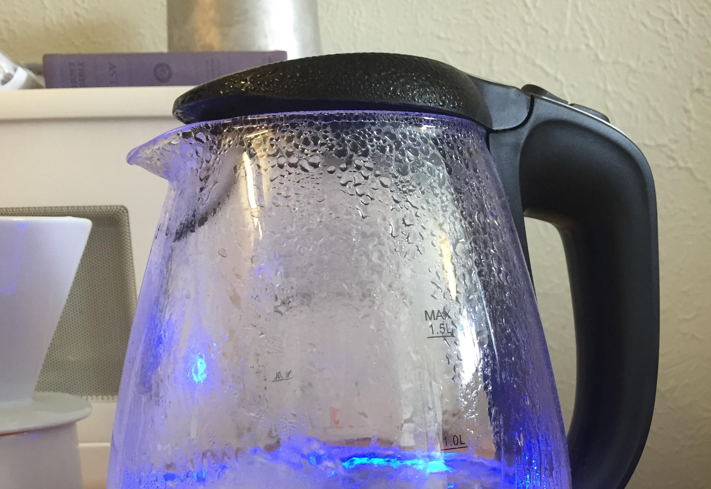
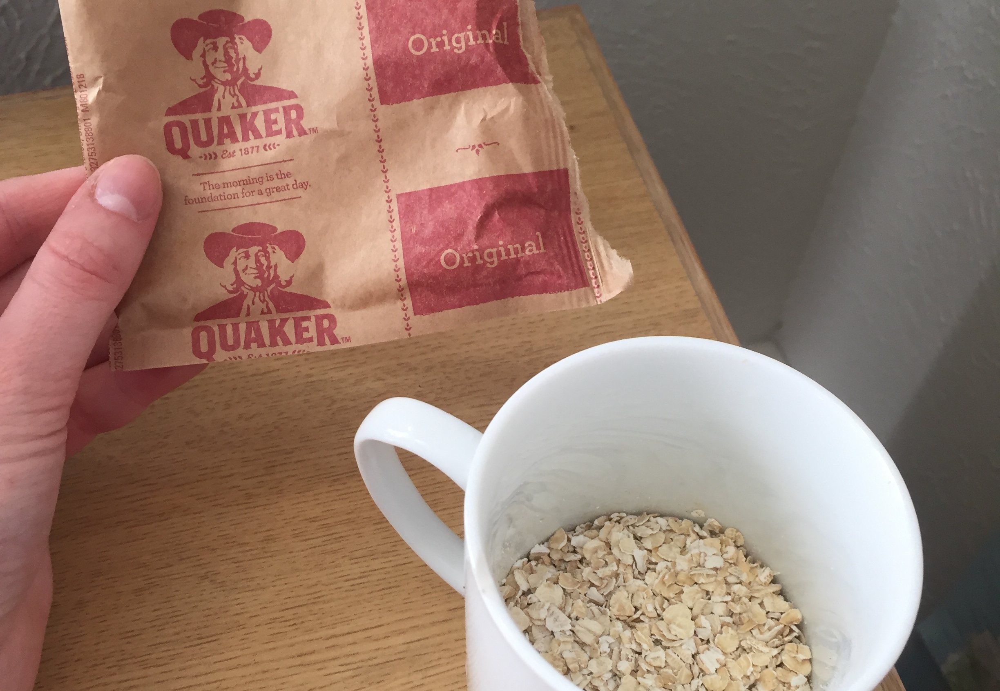
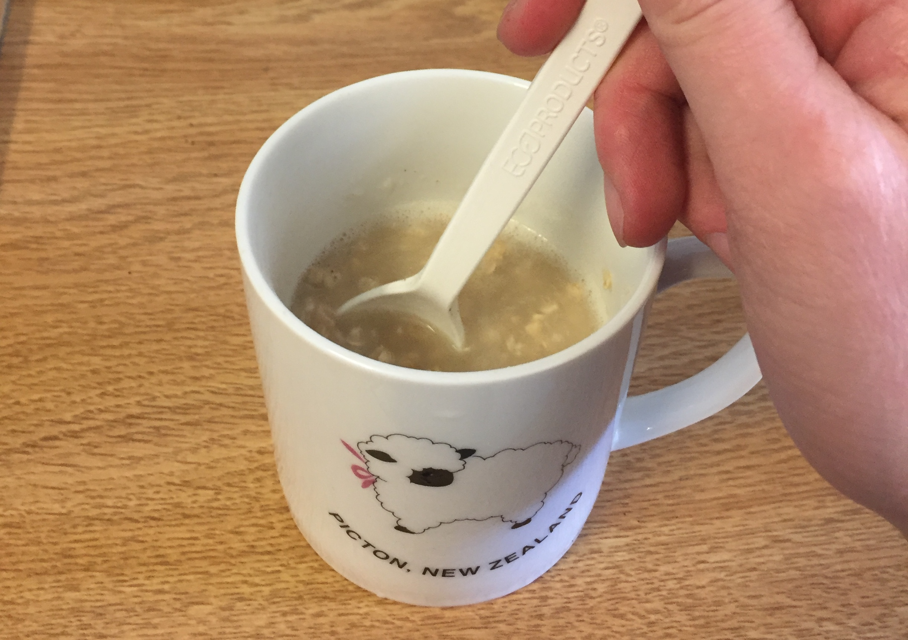

Instant oatmeal is a staple dorm meal. It's tasty, quick, versatile, and healthy enough to not feel guilty about eating it. I reccomend Quaker Orignal Insant Oatmeal. They come in packs of twelve and cost about $5.00.
Bring to boil at least 1/2 cup of water.
While water is heating up, pour your favorite flavor of instant oatmeal into your favorite mug or bowl.
Pour ½ cup of boiling water over the oatmeal. Usually filling a mug halfway is close enough. Give it a stir.
Let the oatmeal sit for at least two minutes. If you want thicker oatmeal, let it sit for longer. I’ve found that seven minutes produces the best consistency for my taste.
Stir in your favorite toppings. Some examples include: